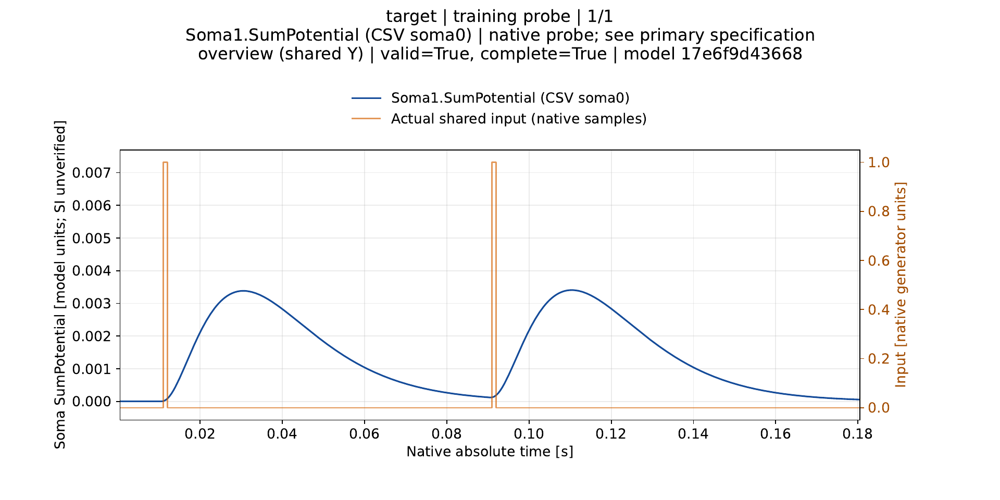
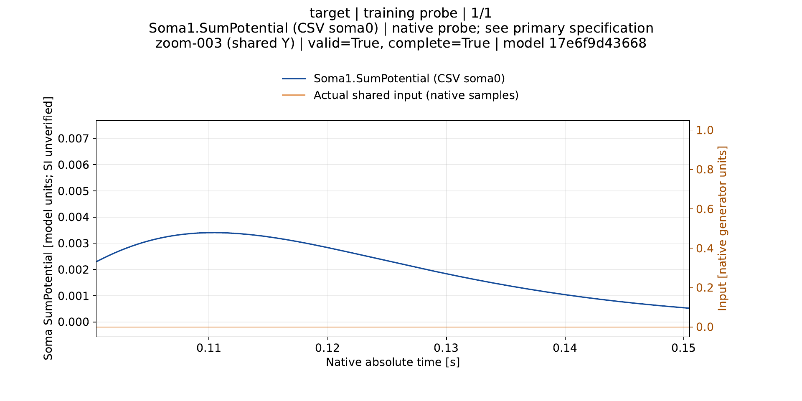
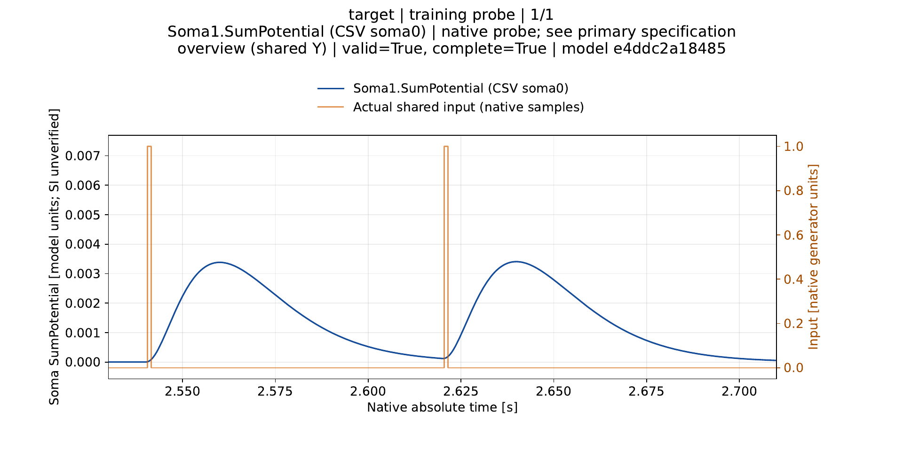
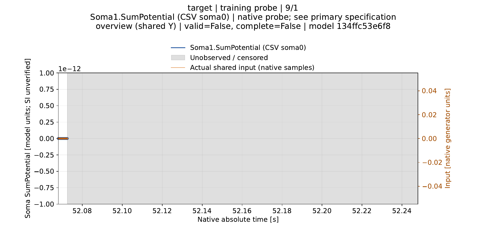
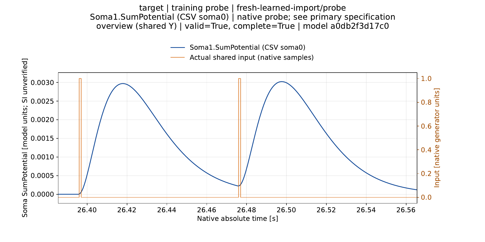
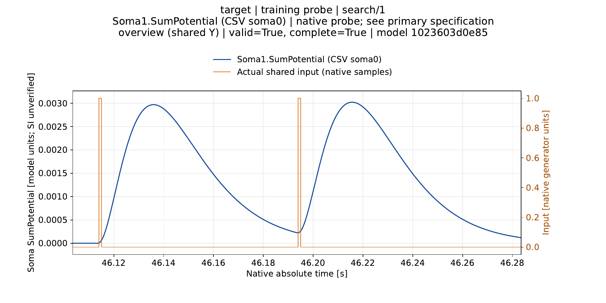

Six source-bound control views. This is a sample, not the complete 338-probe / 507-pair report or a scientific PASS. Full-size images are available directly; scroll each panel or open PNG for visual analysis. Full reports are reproducible M40 cache.
Primary manifest and renderer recipe · Lossless primary archive
Source: Classic_2000_N0_configured_service_service_1.json

Source: Classic_2000_N0_configured_service_service_1.json

Source: Branch_2000_N0_configured_service_service_1.json

Source: Classic_2000_N0_stopped_N0RepeatedEarly_stopped_trial_1.json

Source: Classic_2000_N0_learned_boundary_fresh_process.json/probe

Source: Classic_2000_N0_learned_boundary_explicit_tolerance_configured_repeat2_warm_trial_1.json
